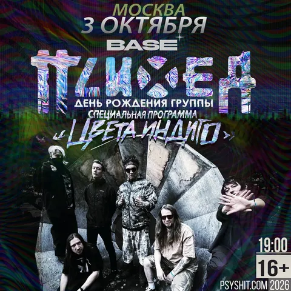
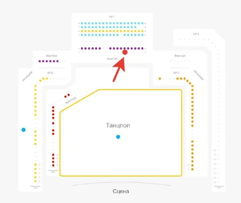

Если вы хотите вернуть свой 2007 (или 2005, или любой другой на ваше усмотрение) на пару часов в эту субботу - это предложение для вас.
3 октября в 19:00 в московском клубе Base (ул. Орджоникидзе 11с1) пройдет концерт легендарной группы Психея, которая стояла у истоков жанров авангардного ню-метала и кибер-кора в России в начале этого века.
Брал билет для себя, достаточно давно. Внезапные, но оттого не менее безотлагательные планы не позволяют мне насладиться творчеством любимой мной (в 2005 тогда еще подростком) группы и окунуться в ностальгию времен, которые теперь видятся беззаботными, хотя тогда казалось, что все очень сложно.
Как бы то ни было, билет super vip ряд 1 место 6 может стать вашим почти бесплатно - купите мне на концерте какой-нибудь мерч группы (например, футболку, размер - XL). Место в первом ряду балкона, стул, стол, бар, еда с обслуживанием официантами, кальян - пусть не так аутентично, как легендарные концерты в клубе Точка, когда мы слэмились в пьяной и прокуренной толпе, но и нам уже не 16, а под сорокет (впрочем, билет позволяет под самый мясной трек спуститься на танцпол, ворваться в мош-пит, и через 40 секунд отползти в випку, страдая одышкой).
Пишите в комменты, в личку, либо в сообщения канала.

